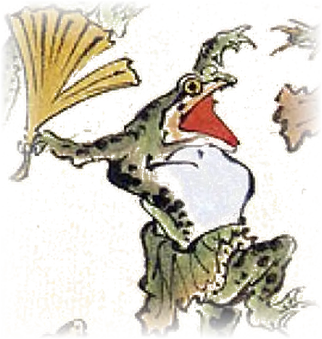
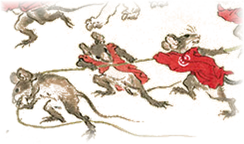
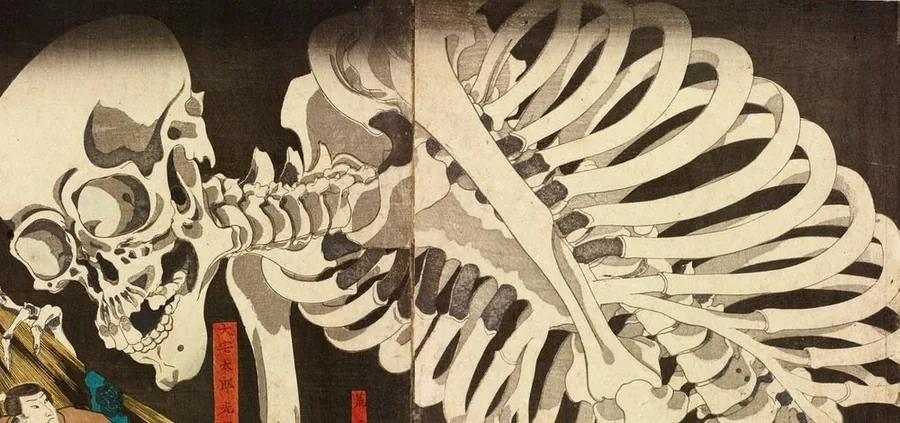
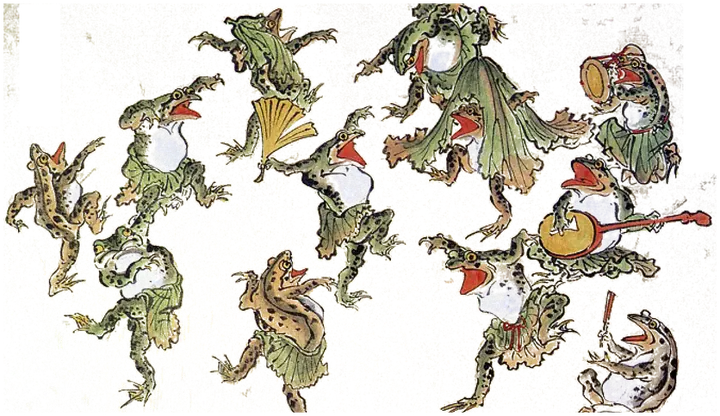
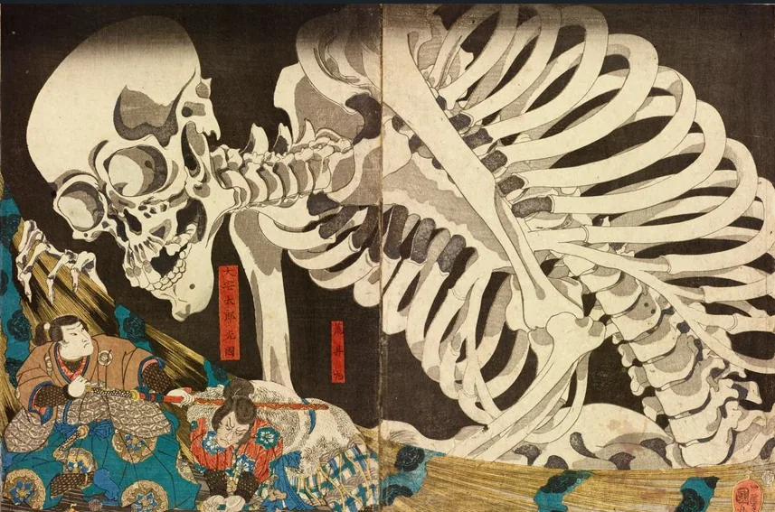

<!doctype html>
<html lang="ja">
<head>
<meta charset="utf-8">
<meta name="viewport" content="width=device-width, initial-scale=1, viewport-fit=cover">
<title>勤怠帖</title>
<meta name="theme-color" content="#F2EAD8">
<meta name="apple-mobile-web-app-capable" content="yes">
<meta name="apple-mobile-web-app-title" content="勤怠帖">
<link rel="manifest" href="manifest.webmanifest">
<link rel="icon" href="icon-192.png">
<link rel="apple-touch-icon" href="icon-192.png">
<link rel="preconnect" href="https://fonts.googleapis.com">
<link rel="preconnect" href="https://fonts.gstatic.com" crossorigin>
<link rel="stylesheet" href="https://fonts.googleapis.com/css2?family=Shippori+Mincho+B1:wght@500;700;800&family=Yuji+Syuku&family=Zen+Kaku+Gothic+New:wght@400;500;700&display=swap">
<style>
/* ===== デザインシステム「浮世勤怠帖」のトークン ===== */
:root{
  --washi:#F2EAD8; --kinari:#FAF5EA; --suna:#D9CCB0; --usuzumi:#6B6155; --sumi:#2A2520;
  --yoru:#231F1B; --hone:#EDE3CC; --shu:#A83A28; --shu-deep:#7E2A1C;
  --ai:#2F6680; --yamabuki:#8A6A1F; --kaeru:#556B33;
  --brush:"Yuji Syuku",serif; --mincho:"Shippori Mincho B1",serif; --gothic:"Zen Kaku Gothic New",sans-serif;
  --gutter:20px; --tap:44px; --tabbar:72px;
  --stroke:1.5px; --hanzure:3px 3px 0 #2A2520;
}
*{box-sizing:border-box}
html,body{margin:0;background:var(--washi);color:var(--sumi);font-family:var(--gothic);font-feature-settings:"palt";-webkit-text-size-adjust:100%}
body{min-height:100dvh}
button,input,select,textarea{font:inherit;color:inherit}
a{color:var(--sumi)}
#app{position:relative;max-width:430px;margin:0 auto;min-height:100dvh;padding-bottom:calc(var(--tabbar) + env(safe-area-inset-bottom))}
.screen{position:relative;padding:calc(28px + env(safe-area-inset-top)) var(--gutter) 24px;display:flex;flex-direction:column;gap:20px;min-height:calc(100dvh - var(--tabbar))}
.screen.yoru{background:var(--yoru);color:var(--hone)}
.tanzaku{position:absolute;top:calc(20px + env(safe-area-inset-top));right:var(--gutter);writing-mode:vertical-rl;background:var(--shu);color:var(--kinari);font-family:var(--mincho);font-weight:700;font-size:14px;letter-spacing:.2em;line-height:1.5;padding:12px 6px;border-radius:2px;z-index:2}
.gear{position:absolute;top:calc(20px + env(safe-area-inset-top));right:64px;width:44px;height:44px;display:flex;align-items:center;justify-content:center;color:var(--sumi);z-index:2}
.head{padding-right:56px;display:flex;flex-direction:column;gap:4px}
h1{margin:0;font-family:var(--mincho);font-weight:800;font-size:24px;line-height:1.45;letter-spacing:.04em}
h2{margin:0;font-family:var(--mincho);font-weight:700;font-size:19px;line-height:1.5;letter-spacing:.04em}
.brush{margin:0;font-family:var(--brush);font-size:36px;line-height:1.3;letter-spacing:.06em}
.label{font-size:11px;font-weight:700;letter-spacing:.12em;color:var(--usuzumi)}
.yoru .label{color:var(--hone)}
.small{font-size:13px;font-weight:500;line-height:1.7;letter-spacing:.05em;color:var(--usuzumi)}
.yoru .small{color:var(--hone)}
.body{font-size:15px;line-height:1.85;letter-spacing:.05em}
.num{font-family:var(--mincho);font-weight:800;font-variant-numeric:tabular-nums;letter-spacing:.02em}
.numeral{font-size:56px;line-height:1.1}
.card{position:relative;background:var(--kinari);border:var(--stroke) solid var(--sumi);border-radius:4px;padding:16px}
.row{display:flex;align-items:center;gap:12px}
.between{justify-content:space-between}
.grow{flex-grow:1;min-width:0}
.divider{border-top:1px solid var(--suna)}
.stamp{display:inline-flex;align-items:center;justify-content:center;flex-shrink:0;color:var(--kinari);font-family:var(--mincho);font-weight:800;border-radius:2px}
.k-in{background:var(--ai)}.k-out{background:var(--sumi)}.k-late{background:var(--yamabuki)}.k-early{background:var(--usuzumi)}.k-absent{background:var(--shu)}.k-leave{background:var(--kaeru)}
.rakkan{position:absolute;right:16px;bottom:-22px;width:60px;height:60px;background:var(--shu);color:var(--kinari);border-radius:2px;outline:1.5px solid var(--kinari);outline-offset:-6px;display:flex;align-items:center;justify-content:center;writing-mode:vertical-rl;font-family:var(--mincho);font-weight:800;font-size:19px;letter-spacing:.1em;transform:rotate(-4deg)}
.btn{display:flex;align-items:center;justify-content:center;gap:8px;height:52px;padding:0 12px;white-space:nowrap;border:var(--stroke) solid var(--sumi);border-radius:6px;background:var(--kinari);color:var(--sumi);font-weight:700;font-size:16px;letter-spacing:.08em;text-decoration:none;cursor:pointer;width:100%}
.btn.primary{height:56px;background:var(--shu);color:var(--kinari);box-shadow:var(--hanzure)}
.btn:disabled,.btn.disabled{background:var(--suna);border-color:var(--suna);color:var(--usuzumi);box-shadow:none;cursor:default}
.yoru .btn.primary{border-color:var(--hone)}
.textbtn{background:transparent;border:0;padding:0 4px;min-height:var(--tap);color:inherit;font-size:13px;font-weight:700;letter-spacing:.05em;text-decoration:underline;text-underline-offset:4px;cursor:pointer}
.chip{height:40px;padding:0 16px;border-radius:20px;border:var(--stroke) solid var(--sumi);background:var(--kinari);font-size:13px;font-weight:500;letter-spacing:.08em;cursor:pointer}
.chip[aria-pressed="true"],.chip[aria-selected="true"]{background:var(--sumi);color:var(--kinari);font-weight:700}
.field{display:flex;flex-direction:column;gap:4px}
.field label,.field .flabel{font-size:11px;font-weight:700;letter-spacing:.12em}
.input,select.input,textarea.input{height:44px;width:100%;padding:0 12px;background:var(--kinari);border:var(--stroke) solid var(--sumi);border-radius:4px;font-size:15px;letter-spacing:.05em}
select.input{font-family:var(--mincho);font-weight:700;font-size:17px;padding:0 8px}
textarea.input{height:auto;min-height:76px;padding:10px 12px;line-height:1.85;resize:vertical}
.input:disabled{background:var(--suna);border-color:var(--suna);color:var(--usuzumi)}
.ill{display:block;margin-left:auto;object-fit:contain;object-position:right bottom;max-width:100%;pointer-events:none;user-select:none}
.tile{height:60px;display:flex;align-items:center;gap:12px;padding:0 14px;background:var(--kinari);border:var(--stroke) solid var(--sumi);border-radius:6px;text-align:left;cursor:pointer}
.tile[aria-pressed="true"]{border:2.5px solid var(--shu);box-shadow:var(--hanzure)}
.grid2{display:grid;grid-template-columns:repeat(2,minmax(0,1fr));gap:12px}
.grid3{display:grid;grid-template-columns:repeat(3,minmax(0,1fr));gap:8px}
.grid4{display:grid;grid-template-columns:repeat(4,minmax(0,1fr));gap:8px}
dl{margin:0} dd{margin:0}
.tabbar{position:fixed;left:50%;transform:translateX(-50%);bottom:0;width:100%;max-width:430px;height:calc(var(--tabbar) + env(safe-area-inset-bottom));padding-bottom:env(safe-area-inset-bottom);background:var(--kinari);border-top:var(--stroke) solid var(--sumi);display:grid;grid-template-columns:repeat(4,minmax(0,1fr));z-index:10}
.tabbar a{display:flex;flex-direction:column;align-items:center;justify-content:center;gap:4px;color:var(--sumi);text-decoration:none;font-size:11px;font-weight:500;letter-spacing:.08em;border-top:3px solid transparent}
.tabbar a[aria-current="page"]{color:var(--shu);font-weight:700;border-top-color:var(--shu)}
.tabbar.dark{background:var(--yoru);border-top-color:var(--hone)}
.tabbar.dark a{color:var(--hone)}
.tabbar.dark a[aria-current="page"]{color:var(--hone);border-top-color:var(--hone)}
.cal{display:grid;grid-template-columns:repeat(7,minmax(0,1fr));grid-auto-rows:52px;border-top:1px solid var(--suna)}
.cal button,.cal span.empty{display:flex;flex-direction:column;align-items:center;justify-content:center;gap:2px;padding:0;background:transparent;border:1.5px solid transparent;border-bottom:1px solid var(--suna);cursor:pointer}
.cal button[aria-pressed="true"]{background:var(--kinari);border:1.5px solid var(--sumi);border-radius:4px}
.cal .d{min-width:24px;height:24px;display:inline-flex;align-items:center;justify-content:center;font-family:var(--mincho);font-weight:700;font-size:14px}
.cal .today .d{background:var(--shu);color:var(--kinari);border-radius:2px;font-weight:800}
.cal .sat .d{color:var(--ai)} .cal .sun .d,.cal .hol .d{color:var(--usuzumi)}
.bars{height:150px;display:flex;align-items:flex-end;gap:3px;border-bottom:1.5px solid var(--sumi);overflow:hidden}
.bars .b{flex:1 1 0;min-width:0;max-width:28px;display:flex;flex-direction:column;align-items:center;gap:2px}
.bars .b span{font-family:var(--mincho);font-weight:700;font-size:10px}
.bars .b i{display:block;width:100%;background:var(--suna);border:1.5px solid var(--sumi);border-bottom:0;border-radius:2px 2px 0 0}
.bars .b.peak i{background:var(--shu)} .bars .b.peak span{color:var(--shu);font-weight:800}
.blabels{display:flex;gap:3px} .blabels span{flex:1 1 0;min-width:0;max-width:28px;text-align:center;font-size:10px;font-weight:700;color:var(--usuzumi)}
.band{height:28px;display:flex;border:1.5px solid var(--sumi);border-radius:2px;overflow:hidden}
.band span{display:flex;align-items:center;justify-content:center;color:var(--kinari);font-family:var(--mincho);font-weight:800;font-size:12px;min-width:0}
.band span+span{border-left:1.5px solid var(--sumi)}
.tbl{border-collapse:collapse;font-size:12px;letter-spacing:.02em;font-variant-numeric:tabular-nums;white-space:nowrap}
.tbl th{position:sticky;top:0;background:var(--sumi);color:var(--kinari);font-weight:700;padding:6px 8px;text-align:left}
.tbl td{padding:5px 8px;border-bottom:1px solid var(--suna)}
.tbl td.r,.tbl th.r{text-align:right}
.toast{position:fixed;left:50%;bottom:calc(var(--tabbar) + 16px + env(safe-area-inset-bottom));transform:translateX(-50%);max-width:390px;width:calc(100% - 40px);background:var(--sumi);color:var(--kinari);padding:12px 16px;border-radius:6px;font-size:13px;font-weight:500;line-height:1.6;z-index:20}
.notice{display:flex;align-items:center;gap:10px;padding:10px 12px;border:var(--stroke) solid var(--sumi);border-radius:4px;background:var(--kinari);font-size:13px;line-height:1.6;text-decoration:none}
.pre{white-space:pre-line}
.sr{position:absolute;width:1px;height:1px;overflow:hidden;clip:rect(0 0 0 0)}
.icon{width:24px;height:24px;fill:none;stroke:currentColor;stroke-width:1.75;stroke-linecap:round;stroke-linejoin:round;flex-shrink:0}
</style>
</head>
<body>
<div id="app" aria-live="polite"></div>
<script>
'use strict';
/* =========================================================
   勤怠帖 — 個人用の勤怠アプリ
   記録と設定はこの端末のブラウザ（localStorage）にだけ保存します。
   ========================================================= */

/* ---------- 保存 ---------- */
const STORE_KEY = 'ukiyo-kintai:v1';
const DEFAULT_SETTINGS = {
  lastName: '', fullName: '', dept: '', siteTeam: '',
  ownTo: '', siteTo: '', selfTo: '',
  webhook: '', threadLink: '', threadMonth: '',
  start: '10:00', end: '19:00', brk: '1:00',
  task: '', otLimit: 20,
  startDate: ''
};
function load() {
  try {
    const raw = localStorage.getItem(STORE_KEY);
    if (raw) {
      const d = JSON.parse(raw);
      return { v: 1, settings: Object.assign({}, DEFAULT_SETTINGS, d.settings || {}), recs: d.recs || {} };
    }
  } catch (e) {}
  return { v: 1, settings: Object.assign({}, DEFAULT_SETTINGS), recs: {} };
}
let DB = load();
if (!DB.settings.startDate) { DB.settings.startDate = todayKey(); save(); }
function save() {
  try { localStorage.setItem(STORE_KEY, JSON.stringify(DB)); } catch (e) { toast('保存できませんでした。ブラウザの保存領域を確認してください。'); }
}

/* ---------- 日付と時刻 ---------- */
const WD = ['日', '月', '火', '水', '木', '金', '土'];
function pad(n) { return String(n).padStart(2, '0'); }
function keyOf(d) { return d.getFullYear() + '-' + pad(d.getMonth() + 1) + '-' + pad(d.getDate()); }
function todayKey() { return keyOf(new Date()); }
function parseKey(k) { const p = k.split('-').map(Number); return new Date(p[0], p[1] - 1, p[2]); }
function md(k) { const d = parseKey(k); return (d.getMonth() + 1) + '/' + d.getDate(); }
function mdw(k) { const d = parseKey(k); return md(k) + '（' + WD[d.getDay()] + '）'; }
function jpDate(k) { const d = parseKey(k); return (d.getMonth() + 1) + '月' + d.getDate() + '日（' + WD[d.getDay()] + '）'; }
function toM(t) { if (!t) return null; const p = String(t).split(':'); return Number(p[0]) * 60 + Number(p[1]); }
function hm(m) { return pad(Math.floor(m / 60)) + ':' + pad(m % 60); }
function dur(m) { return m == null ? '' : Math.floor(m / 60) + ':' + pad(m % 60); }
function durJp(m) { return Math.floor(m / 60) + '時間' + pad(m % 60) + '分'; }
function jpTime(t) { const m = toM(t); const h = Math.floor(m / 60), mi = m % 60; return h + '時' + (mi ? pad(mi) + '分' : ''); }
function nowM() { const d = new Date(); return d.getHours() * 60 + d.getMinutes(); }
function ceil15(m) { return Math.ceil(m / 15) * 15; }
function times(from, to) { const r = []; for (let m = from; m <= to; m += 15) r.push(hm(m)); return r; }
function monthKey(k) { return k.slice(0, 7); }
function daysIn(mk) { const p = mk.split('-').map(Number); return new Date(p[0], p[1], 0).getDate(); }

/* 日本の祝日（振替休日・国民の休日を含む） */
const HOL_CACHE = {};
function holidays(y) {
  if (HOL_CACHE[y]) return HOL_CACHE[y];
  const h = {};
  const set = (m, d, name) => { h[y + '-' + pad(m) + '-' + pad(d)] = name; };
  const nthMon = (m, n) => { const first = new Date(y, m - 1, 1).getDay(); return 1 + ((8 - first) % 7) + (n - 1) * 7; };
  set(1, 1, '元日'); set(1, nthMon(1, 2), '成人の日'); set(2, 11, '建国記念の日'); set(2, 23, '天皇誕生日');
  set(3, Math.floor(20.8431 + 0.242194 * (y - 1980) - Math.floor((y - 1980) / 4)), '春分の日');
  set(4, 29, '昭和の日'); set(5, 3, '憲法記念日'); set(5, 4, 'みどりの日'); set(5, 5, 'こどもの日');
  set(7, nthMon(7, 3), '海の日'); set(8, 11, '山の日'); set(9, nthMon(9, 3), '敬老の日');
  set(9, Math.floor(23.2488 + 0.242194 * (y - 1980) - Math.floor((y - 1980) / 4)), '秋分の日');
  set(10, nthMon(10, 2), 'スポーツの日'); set(11, 3, '文化の日'); set(11, 23, '勤労感謝の日');
  // 国民の休日（祝日に挟まれた平日）
  Object.keys(h).forEach((k) => {
    const d = parseKey(k); const n2 = new Date(d); n2.setDate(d.getDate() + 2);
    const mid = new Date(d); mid.setDate(d.getDate() + 1);
    if (h[keyOf(n2)] && !h[keyOf(mid)] && mid.getDay() !== 0) h[keyOf(mid)] = '国民の休日';
  });
  // 振替休日
  Object.keys(h).sort().forEach((k) => {
    const d = parseKey(k);
    if (d.getDay() === 0) { const n = new Date(d); do { n.setDate(n.getDate() + 1); } while (h[keyOf(n)]); h[keyOf(n)] = '振替休日'; }
  });
  HOL_CACHE[y] = h; return h;
}
function holidayName(k) { return holidays(Number(k.slice(0, 4)))[k] || ''; }
function isWorkday(k) { const w = parseKey(k).getDay(); return w !== 0 && w !== 6 && !holidayName(k); }

/* ---------- 勤怠の記録 ---------- */
const KIND = {
  normal: { label: '通常勤務', short: '通常' }, late: { label: '遅刻', short: '遅刻' }, early: { label: '早退', short: '早退' },
  absent: { label: '欠勤', short: '欠勤' }, leave: { label: '有休', short: '有休' }, holidaywork: { label: '休日出勤', short: '休日出勤' }
};
const STAMP = { in: ['出', '出勤', 'k-in'], out: ['退', '退勤', 'k-out'], late: ['遅', '遅刻', 'k-late'], early: ['早', '早退', 'k-early'], absent: ['欠', '欠勤', 'k-absent'], leave: ['休', '有休', 'k-leave'] };
const S = () => DB.settings;
const isOff = (r) => r && (r.kind === 'absent' || r.kind === 'leave');
function stdWork() { return toM(S().end) - toM(S().start) - (toM(S().brk) || 0); }
function rec(k) { return DB.recs[k]; }
function putRec(k, r) { DB.recs[k] = Object.assign({}, r); save(); }
/* 押し忘れても既定で入る：使い始めた日以降の過去の平日は、記録がなければ既定の勤務として扱う */
function eff(k) {
  const t = todayKey();
  const r = DB.recs[k];
  if (r) {
    if (r.kind === 'none') return null;
    if (!isOff(r) && r.start && !r.end && k < t) return Object.assign({}, r, { end: S().end, autoEnd: true });
    return r;
  }
  if (k < t && k >= S().startDate && isWorkday(k)) return { kind: 'normal', start: S().start, end: S().end, brk: S().brk, task: S().task, note: '', auto: true };
  return null;
}
function workOf(r) { if (!r || isOff(r) || !r.start || !r.end) return null; return Math.max(0, toM(r.end) - toM(r.start) - (toM(r.brk) || 0)); }
function otOf(r) { const w = workOf(r); return w == null ? null : Math.max(0, w - stdWork()); }
function stampOf(r) { if (!r) return null; if (r.kind === 'normal' || r.kind === 'holidaywork') return r.end ? 'out' : 'in'; return r.kind; }
function noteOf(r) { return [r.note, r.endNote, r.part && r.part !== '終日' ? r.part : ''].filter(Boolean).join(' / '); }
function stampHtml(st, size) { if (!st) return ''; const s = STAMP[st]; return '<span class="stamp ' + s[2] + '" style="width:' + size + 'px;height:' + size + 'px;font-size:' + Math.round(size * .55) + 'px" aria-hidden="true">' + s[0] + '</span>'; }

/* 月の集計（確定分：今日より前の日） */
function monthStats(mk) {
  const t = todayKey(); const n = daysIn(mk);
  let days = 0, work = 0, ot = 0; const bars = []; const kinds = { in: 0, late: 0, early: 0, absent: 0, leave: 0 };
  let remainWorkdays = 0;
  for (let d = 1; d <= n; d++) {
    const k = mk + '-' + pad(d);
    if (k >= t) { if (isWorkday(k)) remainWorkdays++; continue; }
    const r = eff(k); if (!r) continue;
    const w = workOf(r);
    if (w != null && w > 0) { days++; work += w; ot += otOf(r); bars.push({ d, w }); }
    if (r.kind === 'normal' || r.kind === 'holidaywork') kinds.in++; else if (kinds[r.kind] != null) kinds[r.kind]++;
  }
  const forecast = days ? Math.round(ot + (ot / days) * remainWorkdays) : 0;
  return { days, work, ot, bars, kinds, forecast, remainWorkdays };
}

/* ---------- 文面 ---------- */
function teamsDaily(k, r) {
  const lines = [];
  if (r.start && r.start !== S().start) { lines.push(md(k) + ' ' + r.start + ' 業務開始'); lines.push(r.note || '［理由］'); }
  lines.push(md(k) + ' ' + (r.end || S().end) + ' 業務終了');
  if (r.end && toM(r.end) < toM(S().end)) lines.push(r.endNote || '［理由］');
  return lines.join('\n');
}
function teamsOff(k, r) { return md(k) + ' ' + (r.kind === 'absent' ? '欠勤' : '有休') + (r.part && r.part !== '終日' ? '（' + r.part + '）' : '') + '\n' + (r.note || '［理由］'); }
function mailsFor(k, r) {
  const s = S();
  const last = s.lastName || '［姓］', full = s.fullName || '［氏名］', dept = s.dept || '［部署］', team = s.siteTeam || '［現場での所属］';
  const reason = (r.kind === 'early' ? r.endNote : r.note) || '［理由］';
  const word = { late: '遅刻', early: '早退', absent: '欠勤', leave: '休暇取得' }[r.kind] || '';
  const line = { late: '下記日程で遅刻致します。', early: '下記日程で早退致します。', absent: '下記日程で欠勤致します。', leave: '下記日程で有給休暇を取得致します。' }[r.kind];
  let extra = '';
  if (r.kind === 'late') extra = r.start + '出社予定　';
  if (r.kind === 'early') extra = r.end + '退社予定　';
  if (r.kind === 'leave' && r.part && r.part !== '終日') extra = r.part + '　';
  const own = {
    to: s.ownTo, subject: '【勤怠連絡】' + last + '　' + md(k) + word,
    body: ['各位', '', 'お疲れ様です。', dept + '　' + last + 'です。', '']
      .concat(k === todayKey() ? ['当日連絡で申し訳ありません。'] : [])
      .concat([line, mdw(k) + '　' + extra + '理由：' + reason, '', '※現場調整済みです。', '', 'どうぞよろしくお願い致します。']).join('\n')
  };
  let siteLine = '';
  if (r.kind === 'late') siteLine = reason + '遅れます。\n\n' + jpTime(r.start) + 'までには出社できる見込みです。';
  if (r.kind === 'early') siteLine = reason + '、本日は' + jpTime(r.end) + 'に早退します。';
  if (r.kind === 'absent') siteLine = reason + '、本日はお休みをいただきます。';
  if (r.kind === 'leave') siteLine = mdw(k) + 'は、' + reason + (r.part && r.part !== '終日' ? r.part : '休暇') + 'をいただきます。';
  const site = { to: s.siteTo, subject: team + '　' + full, body: ['各位', '', 'お疲れ様です。', team + 'の ' + last + 'です。', '', siteLine].join('\n') };
  const out = { own, site };
  if (isOff(r)) out.teams = { to: 'Teams（ワークフローのチャネル）', subject: '', body: teamsOff(k, r) };
  return out;
}
function mailto(to, subject, body) {
  return 'mailto:' + encodeURIComponent(to || '') + '?subject=' + encodeURIComponent(subject) + '&body=' + encodeURIComponent(body.replace(/\n/g, '\r\n'));
}

/* ---------- Teams（ワークフローの webhook）へ送る ---------- */
/* 返信先スレッドのリンク（Teamsで投稿の「…」→「リンクをコピー」）から、投稿のIDなどを取り出す */
function parseThread(link) {
  try {
    const u = new URL(String(link).trim());
    const m = u.pathname.match(/\/l\/message\/([^/]+)\/(\d+)/);
    if (!m) return null;
    const p = u.searchParams;
    const parent = p.get('parentMessageId');
    return {
      channelId: decodeURIComponent(m[1]),
      messageId: parent && parent !== '0' ? parent : m[2],
      teamId: p.get('groupId') || '',
      tenantId: p.get('tenantId') || ''
    };
  } catch (e) { return null; }
}
function threadOk() { return !!parseThread(S().threadLink); }
async function postTeams(text) {
  const url = S().webhook.trim();
  if (!url) return { ok: false, msg: 'TeamsのワークフローURLが設定されていません。' };
  const th = parseThread(S().threadLink);
  if (!th) return { ok: false, msg: '返信先スレッドのリンクが設定されていません。設定から貼り付けてください。' };
  const card = {
    type: 'message',
    // ワークフロー（「チャネル内のメッセージで返信する」）が使う値
    text: text,
    html: text.split('\n').map(esc).join('<br>'),
    messageId: th.messageId, channelId: th.channelId, teamId: th.teamId,
    attachments: [{ contentType: 'application/vnd.microsoft.card.adaptive', contentUrl: null,
      content: { $schema: 'http://adaptivecards.io/schemas/adaptive-card.json', type: 'AdaptiveCard', version: '1.4',
        body: text.split('\n').map((t, i) => ({ type: 'TextBlock', text: t || ' ', wrap: true, spacing: i ? 'None' : 'Default' })) } }]
  };
  const body = JSON.stringify(card);
  try {
    const res = await fetch(url, { method: 'POST', headers: { 'Content-Type': 'application/json' }, body });
    if (res.ok) return { ok: true, msg: 'Teamsに投稿しました。' };
    return { ok: false, msg: 'Teamsに送れませんでした（' + res.status + '）。URLを確かめてください。' };
  } catch (e) {
    // ブラウザの制限で中身の確認ができない送り方に切り替える
    try {
      await fetch(url, { method: 'POST', mode: 'no-cors', headers: { 'Content-Type': 'text/plain;charset=UTF-8' }, body });
      return { ok: true, unsure: true, msg: '送信しました。Teamsのチャネルに届いたか確かめてください。' };
    } catch (e2) {
      return { ok: false, msg: 'Teamsに送れませんでした。通信状態とURLを確かめてください。' };
    }
  }
}

/* ---------- 画面の状態（保存しない） ---------- */
const ui = {
  homeKubun: 'normal', homeStart: '',
  inLocked: true,
  outEnd: '', outReason: '', outPosted: '',
  reg: null,
  msg: { tab: 'own', editing: false, edits: {}, status: {} },
  cal: { sel: null, editing: false, draft: null, month: null },
  confirmReset: false
};
function resetReg(kind) {
  const t = todayKey();
  ui.reg = { kind: kind || 'late', date: t, time: '', part: '終日', reason: '' };
  regDefaults();
}
function regDefaults() {
  const r = ui.reg;
  if (r.kind === 'late') r.time = r.time && toM(r.time) > toM(S().start) ? r.time : hm(toM(S().start) + 90);
  if (r.kind === 'early') r.time = r.time && toM(r.time) < toM(S().end) ? r.time : hm(toM(S().end) - 240);
}

/* ---------- 共通の部品 ---------- */
function esc(s) { return String(s == null ? '' : s).replace(/[&<>"']/g, (c) => ({ '&': '&amp;', '<': '&lt;', '>': '&gt;', '"': '&quot;', "'": '&#39;' }[c])); }
const ICON = {
  home: '<path d="M3 10.5 12 4l9 6.5"/><path d="M5 9.5V20h14V9.5"/><path d="M10 20v-5h4v5"/>',
  pen: '<path d="M4 20l3.5-1 11-11-2.5-2.5-11 11z"/><path d="M14.5 6.5 17 9"/>',
  cal: '<rect x="3.5" y="5" width="17" height="15" rx="1"/><path d="M3.5 10h17M8 3v4M16 3v4"/>',
  book: '<path d="M5 4h14v16H5z"/><path d="M9 4v16"/><path d="M12 9h4M12 13h4"/>',
  copy: '<rect x="8" y="8" width="12" height="12" rx="1"/><path d="M16 8V4H4v12h4"/>',
  mail: '<rect x="3.5" y="5.5" width="17" height="13" rx="1"/><path d="m4 6.5 8 6 8-6"/>',
  gear: '<circle cx="12" cy="12" r="3"/><path d="M12 3v2.5M12 18.5V21M3 12h2.5M18.5 12H21M5.6 5.6l1.8 1.8M16.6 16.6l1.8 1.8M5.6 18.4l1.8-1.8M16.6 7.4l1.8-1.8"/>',
  lock: '<rect x="5" y="11" width="14" height="9" rx="1"/><path d="M8 11V8a4 4 0 0 1 8 0v3"/>',
  left: '<path d="m15 5-7 7 7 7"/>', right: '<path d="m9 5 7 7-7 7"/>'
};
function icon(n, s) { return '<svg class="icon" viewBox="0 0 24 24" style="width:' + (s || 24) + 'px;height:' + (s || 24) + 'px" aria-hidden="true">' + ICON[n] + '</svg>'; }
function tanzaku(t) { return '<div class="tanzaku">' + esc(t) + '</div>'; }
function tabbar(cur, dark) {
  const items = [['home', 'ホーム', 'home'], ['register', '登録', 'pen'], ['calendar', '暦', 'cal'], ['summary', 'まとめ', 'book']];
  return '<nav class="tabbar' + (dark ? ' dark' : '') + '" aria-label="メイン">' + items.map((i) =>
    '<a href="#' + i[0] + '"' + (cur === i[0] ? ' aria-current="page"' : '') + '>' + icon(i[2]) + i[1] + '</a>').join('') + '</nav>';
}
function options(list, val) { return list.map((o) => { const v = typeof o === 'string' ? o : o[0]; const l = typeof o === 'string' ? o : o[1]; return '<option value="' + esc(v) + '"' + (v === val ? ' selected' : '') + '>' + esc(l) + '</option>'; }).join(''); }
let toastTimer = null;
function toast(msg) {
  let el = document.getElementById('toast');
  if (!el) { el = document.createElement('div'); el.id = 'toast'; el.className = 'toast'; el.setAttribute('role', 'status'); document.body.appendChild(el); }
  el.textContent = msg; el.hidden = false;
  clearTimeout(toastTimer); toastTimer = setTimeout(() => { el.hidden = true; }, 3800);
}
async function copyText(text) {
  try { await navigator.clipboard.writeText(text); toast('写しました。'); return true; }
  catch (e) {
    const ta = document.createElement('textarea'); ta.value = text; document.body.appendChild(ta); ta.select();
    let ok = false; try { ok = document.execCommand('copy'); } catch (e2) {}
    ta.remove(); toast(ok ? '写しました。' : '写せませんでした。'); return ok;
  }
}
function settingsReady() { const s = S(); return s.lastName && s.fullName; }

/* =========================================================
   画面
   ========================================================= */
const V = {};

/* 1. ホーム（打刻） */
V.home = () => {
  const t = todayKey(); const r = rec(t); const d = new Date(); const h = d.getHours();
  const greeting = h < 11 ? 'おはようございます' : (h < 17 ? 'こんにちは' : 'おつかれさまです');
  const st = monthStats(monthKey(t));
  const lim = Number(S().otLimit) || 20;
  const otWarn = st.ot >= lim * 60 * 0.6 || st.forecast > lim * 60;
  const workday = isWorkday(t);
  if (!r && !workday && ui.homeKubun === 'normal' && !ui._kubunTouched) ui.homeKubun = 'holiday';
  let todayCard, mainBtn, chips = '', hint = '';
  const started = r && r.start && !isOff(r);
  const ended = started && r.end;
  if (r && isOff(r)) {
    todayCard = '<div class="row" style="height:56px">' + stampHtml(r.kind, 28) + '<span class="grow" style="font-weight:700">' + KIND[r.kind].label + '</span><span class="small">' + esc(r.note || '') + '</span></div>';
    mainBtn = '<a class="btn" href="#calendar">暦で見る</a>';
  } else {
    if (!started) {
      const ks = [['normal', '通常'], ['late', '遅刻'], ['leave', '有休'], ['holiday', '休日出勤']];
      chips = '<div class="field"><span class="label">今日の区分</span><div class="row" style="gap:8px;flex-wrap:wrap">' +
        ks.map((k) => '<button type="button" class="chip" data-act="kubun" data-v="' + k[0] + '" aria-pressed="' + (ui.homeKubun === k[0]) + '">' + k[1] + '</button>').join('') + '</div></div>';
    }
    const locked = ui.homeKubun === 'normal';
    let inCell;
    if (started) inCell = (r.punchIn ? '<span class="label">打刻 ' + esc(r.punchIn) + '</span>' : '') + '<span class="num" style="font-size:22px">' + esc(r.start) + '</span>';
    else if (locked) inCell = '<span class="row" style="gap:6px;color:var(--usuzumi)">' + icon('lock', 16) + '<span class="num" style="font-size:22px;color:var(--sumi)">' + esc(S().start) + '</span><span class="label">既定</span></span>';
    else {
      const def = ui.homeStart || (ui.homeKubun === 'late' ? hm(toM(S().start) + 90) : S().start);
      inCell = '<label class="sr" for="homeStart">出勤時刻</label><select id="homeStart" class="input" style="width:auto;min-width:112px" data-field="homeStart">' + options(times(6 * 60, 15 * 60), def) + '</select>';
    }
    todayCard = '<div class="row" style="min-height:56px;border-bottom:1px solid var(--suna)">' + stampHtml('in', 28) + '<span class="grow" style="font-size:15px;font-weight:700">出勤時刻</span>' + inCell + '</div>' +
      '<div class="row" style="min-height:56px">' + stampHtml('out', 28) + '<span class="grow" style="font-size:15px;font-weight:700">退勤時刻</span>' +
      (ended ? '<span class="num" style="font-size:22px">' + esc(r.end) + '</span>' : '<span class="label">' + (started ? '未打刻・既定 ' + esc(S().end) : '') + '</span><span class="num" style="font-size:22px;color:var(--usuzumi)">—</span>') + '</div>';
    if (ended) mainBtn = '<button class="btn disabled" disabled>今日の記録は済みました</button>';
    else if (started) mainBtn = '<button class="btn primary" data-act="clockout">退勤する</button>';
    else if (ui.homeKubun === 'leave') mainBtn = '<button class="btn primary" data-act="toLeave">有休を登録する</button>';
    else mainBtn = '<button class="btn primary" data-act="clockin">出勤する</button>';
    hint = started ? '押し忘れた場合は、退勤 ' + S().end + ' で記録されます。' :
      ({ normal: '押し忘れても、出勤 ' + S().start + '・退勤 ' + S().end + ' で記録されます。通常の日は出勤時刻を変えられません。', late: '遅刻の日は出勤時刻を15分刻みで選べます。会社への連絡は「登録」から。', leave: '有休は「登録」から日付と理由を入れて、連絡のメールも作れます。', holiday: '休日出勤の日は出勤時刻を15分刻みで選べます。' })[ui.homeKubun];
  }
  return tanzaku('ホーム') + '<a class="gear" href="#settings" aria-label="設定">' + icon('gear') + '</a>' +
    '<div class="head" style="padding-right:108px"><span class="label">' + d.getFullYear() + '年</span><h2>' + jpDate(t) + (holidayName(t) ? '<span class="small">　' + esc(holidayName(t)) + '</span>' : '') + '</h2></div>' +
    (!settingsReady() ? '<a class="notice" href="#settings">' + icon('gear', 20) + '<span>はじめに「設定」で氏名や宛先を入れてください。</span></a>' : '') +
    (S().webhook && S().threadMonth !== monthKey(t) ? '<a class="notice" href="#settings">' + icon('gear', 20) + '<span>' + (parseKey(t).getMonth() + 1) + '月のTeamsのスレッドのリンクを、設定に貼ってください。</span></a>' : '') +
    '<p class="brush" id="greet">' + greeting + '</p>' +
    '<div class="row" style="align-items:flex-end;gap:8px;margin-top:-8px"><div class="field"><span class="label">現在の時刻</span><div class="row" style="gap:4px;align-items:baseline"><span class="num numeral" id="clockHM">' + hm(nowM()) + '</span><span class="num" style="font-size:19px;color:var(--usuzumi)" id="clockSS">' + pad(d.getSeconds()) + '</span></div></div>' +
    '</div>' +
    chips +
    '<section class="card" aria-label="今日の記録" style="padding:4px 16px"><h2 style="font-size:16px;margin:12px 0 4px">今日の記録</h2>' + todayCard + '</section>' +
    (hint ? '<p class="small" style="margin:0">' + esc(hint) + '</p>' : '') +
    (otWarn ? '<a class="notice" href="#overtime">今月の残業 ' + durJp(st.ot) + '。注意を見る</a>' : '') +
    '<div style="margin-top:auto">' + mainBtn + '</div>' + tabbar('home');
};

/* 2. 出勤完了 */
V.clockin = () => {
  const t = todayKey(); const r = rec(t);
  if (!r || !r.start) { location.hash = '#home'; return ''; }
  const locked = r.kind === 'normal' && ui.inLocked;
  return tanzaku('出勤完了') +
    '<div class="head"><h1>出勤を記録しました</h1><span class="small">' + jpDate(t) + '・今日もよろしくお願いします</span></div>' +
    '<section class="card" aria-label="記録した時刻" style="padding:20px 16px 28px"><div class="row" style="gap:8px">' + stampHtml('in', 24) + '<span class="label">記録する出勤時刻</span></div>' +
    '<p class="num numeral" style="margin:8px 0 0">' + esc(r.start) + '</p>' +
    '<p class="small" style="margin:4px 0 16px">打刻 ' + esc(r.punchIn || '') + ' → 15分刻みで記録</p>' +
    '<div class="field divider" style="padding-top:16px"><label for="inSel">時刻を選ぶ（15分刻み）</label>' +
    '<select id="inSel" class="input" data-field="inStart"' + (locked ? ' disabled' : '') + '>' + options(times(6 * 60, 15 * 60), r.start) + '</select>' +
    (locked ? '<div class="row" style="gap:4px;flex-wrap:wrap"><span class="small">通常の日は始業 ' + esc(S().start) + ' で固定です。</span><button class="textbtn" data-act="unlockIn">遅刻・休日出勤として変える</button></div>' : '') +
    '</div><div class="rakkan" role="img" aria-label="完了の印">完了</div></section>' +
    '' +
    '<div style="margin-top:auto"><a class="btn" href="#home">ホームへ戻る</a></div>' + tabbar('home');
};

/* 2'. 退勤完了（Teamsに確かめてから投稿） */
V.clockout = () => {
  const t = todayKey(); const r = rec(t);
  if (!r || !r.start) { location.hash = '#home'; return ''; }
  if (!ui.outEnd) ui.outEnd = r.end || S().end;
  const needStart = r.start !== S().start;
  if (ui.outStartReason == null) ui.outStartReason = r.note || (r.kind === 'holidaywork' ? '休日出勤のため' : '');
  const draft = Object.assign({}, r, { note: needStart ? ui.outStartReason : r.note, end: ui.outEnd, endNote: toM(ui.outEnd) < toM(S().end) ? ui.outReason : '' });
  const w = workOf(draft), ot = otOf(draft);
  const needReason = toM(ui.outEnd) < toM(S().end);
  const posted = ui.outPosted;
  return tanzaku('退勤完了') +
    '<div class="head"><h1>退勤を記録します</h1><span class="small">' + jpDate(t) + '</span></div>' +
    '<p class="brush" style="margin-top:-6px">おつかれさまでした</p>' +
    '<section class="card" aria-label="退勤の記録" style="padding:16px 16px 22px">' +
    '<div class="row" style="gap:8px">' + stampHtml('out', 24) + '<label class="label" for="outSel">記録する退勤時刻（15分刻み）</label></div>' +
    '<div class="row between" style="margin-top:6px"><p class="num numeral" style="margin:0">' + esc(ui.outEnd) + '</p>' +
    '<select id="outSel" class="input" style="width:auto" data-field="outEnd"' + (posted ? ' disabled' : '') + '>' + options(times(toM(r.start) + 15, 23 * 60 + 45), ui.outEnd) + '</select></div>' +
    '<dl class="grid3 divider" style="margin-top:12px;padding-top:12px"><div><dt class="label">出勤</dt><dd class="num" style="font-size:19px;font-weight:700">' + esc(r.start) + '</dd></div>' +
    '<div><dt class="label">勤務（休憩除く）</dt><dd class="num" style="font-size:19px;font-weight:700">' + dur(w) + '</dd></div>' +
    '<div><dt class="label">残業</dt><dd class="num" style="font-size:19px;font-weight:700">' + dur(ot) + '</dd></div></dl>' +
    '<div class="field divider" style="margin-top:12px;padding-top:12px;gap:6px"><div class="row between"><span class="label">Teamsに投稿する文</span><span class="label">' + (posted ? (posted === '記録のみ' ? '記録のみ（未投稿）' : '投稿 ' + esc(posted)) : 'ワークフローのチャネル') + '</span></div>' +
    '<p id="teamsText" class="pre" style="margin:0;padding:8px 10px;background:var(--washi);border:1px solid var(--suna);border-radius:4px;font-size:15px;line-height:1.6">' + esc(teamsDaily(t, draft)) + '</p>' +
    (needStart ? '<div class="field"><label for="outStartReason">開始が ' + esc(r.start) + ' の理由</label><input id="outStartReason" class="input" type="text" placeholder="例：電車遅延のため" value="' + esc(ui.outStartReason) + '" data-live="outStartReason"' + (posted ? ' disabled' : '') + '></div>' : '') +
    (needReason ? '<div class="field"><label for="outReason">' + esc(S().end) + 'より前に終える理由</label><input id="outReason" class="input" type="text" placeholder="例：通院のため" value="' + esc(ui.outReason) + '" data-live="outReason"' + (posted ? ' disabled' : '') + '></div>' : '') +
    '</div>' + (posted ? '<div class="rakkan" role="img" aria-label="完了の印">完了</div>' : '') + '</section>' +
    '' +
    '<div style="margin-top:auto;display:flex;flex-direction:column;gap:8px">' +
    (posted ? '<a class="btn" href="#home">ホームへ戻る</a>' :
      '<button class="btn primary" data-act="postOut">' + (S().webhook ? 'Teamsに投稿する' : '記録する（TeamsのURL未設定）') + '</button>' +
      (S().webhook ? '<button class="textbtn" style="align-self:center" data-act="saveOut">投稿せずに記録だけする</button>' : '')) +
    '</div>' + tabbar('home');
};

/* 3. 登録 */
V.register = () => {
  if (!ui.reg) resetReg();
  const g = ui.reg;
  const kinds = [['late', '遅', '遅刻'], ['early', '早', '早退'], ['absent', '欠', '欠勤'], ['leave', '休', '有休']];
  let timeField;
  if (g.kind === 'late') timeField = '<label for="regTime">出勤予定（15分刻み）</label><select id="regTime" class="input" data-field="regTime">' + options(times(toM(S().start) + 15, 18 * 60), g.time) + '</select>';
  else if (g.kind === 'early') timeField = '<label for="regTime">退勤時刻（15分刻み）</label><select id="regTime" class="input" data-field="regTime">' + options(times(toM(S().start) + 15, toM(S().end) - 15), g.time) + '</select>';
  else if (g.kind === 'leave') timeField = '<label for="regPart">区分</label><select id="regPart" class="input" data-field="regPart">' + options(['終日', '午前休', '午後休'], g.part) + '</select>';
  else timeField = '<span class="flabel">区分</span><select class="input" disabled><option>終日</option></select>';
  const ill = { late: ['mouse_run', 196, 146], early: ['mouse_run', 196, 146], leave: ['frog_jump', 112, 164] }[g.kind];
  const placeholder = { late: '例：電車遅延のため', early: '例：通院のため', absent: '例：体調不良（発熱）のため', leave: '例：私用のため' }[g.kind];
  return tanzaku('登録') +
    '<div class="head"><h1>勤怠を登録する</h1><span class="small">種類を選んで、日付・時刻・理由を入れます。</span></div>' +
    '<div class="grid2" role="group" aria-label="種類">' + kinds.map((k) =>
      '<button type="button" class="tile" data-act="regKind" data-v="' + k[0] + '" aria-pressed="' + (g.kind === k[0]) + '"><span class="stamp k-' + k[0] + '" style="width:30px;height:30px;font-size:15px">' + k[1] + '</span><span style="font-size:16px;font-weight:700;letter-spacing:.06em">' + k[2] + '</span></button>').join('') + '</div>' +
    '<div class="row" style="align-items:flex-end"><div class="field grow"><label for="regDate">日付</label><input id="regDate" class="input" type="date" value="' + esc(g.date) + '" data-field="regDate" style="font-family:var(--mincho);font-weight:700"></div>' +
    '<div class="field" style="width:150px">' + timeField + '</div></div>' +
    '<div class="field"><label for="regReason">理由</label><textarea id="regReason" class="input" rows="2" placeholder="' + placeholder + '" data-live="regReason">' + esc(g.reason) + '</textarea></div>' +
    '<p class="small" style="margin:0">登録すると記録に入ります。次の画面で、自社と現場先へのメールを確かめてから送れます。</p>' +
    (ill ? '' :
      '') +
    '<div style="margin-top:auto"><button class="btn primary" data-act="regSave">この内容で登録する</button></div>' + tabbar('register');
};

/* 4. 連絡のメール */
V.message = (q) => {
  const k = q.d || todayKey(); const r = rec(k);
  if (!r || !['late', 'early', 'absent', 'leave'].includes(r.kind)) { location.hash = '#register'; return ''; }
  const m = ui.msg;
  if (m.key !== k) { ui.msg = { key: k, tab: 'own', editing: false, edits: {}, status: Object.assign({}, r.sent || {}) }; }
  const M = ui.msg;
  const items = mailsFor(k, r);
  const order = items.teams ? ['own', 'site', 'teams'] : ['own', 'site'];
  const names = { own: '自社宛て', site: '現場先宛て', teams: 'Teams' };
  const sendNames = { own: '自社に送る', site: '現場に送る', teams: 'Teamsに投稿' };
  if (!items[M.tab]) M.tab = 'own';
  const base = items[M.tab]; const ed = M.edits[M.tab] || {};
  const cur = { to: base.to, subject: ed.subject != null ? ed.subject : base.subject, body: ed.body != null ? ed.body : base.body };
  const edited = cur.subject !== base.subject || cur.body !== base.body;
  const done = !!M.status[M.tab];
  const editing = M.editing && !done;
  const summary = KIND[r.kind].label + '・' + mdw(k) + (r.kind === 'late' ? ' ' + r.start : r.kind === 'early' ? ' ' + r.end : '') + '・' + ((r.kind === 'early' ? r.endNote : r.note) || '');
  const toLine = M.tab === 'teams' ? esc(base.to) : (cur.to ? esc(cur.to) : '<a href="#settings">［宛先を設定する］</a>');
  return tanzaku('連絡文') +
    '<div class="head"><h1>連絡のメール</h1><span class="small">自社と現場先へ、1通ずつ送れます。</span></div>' +
    '<div class="row" style="gap:8px;margin-top:-8px">' + stampHtml(stampOf(r), 24) + '<span class="grow small" style="color:var(--sumi)">' + esc(summary) + '</span><a href="#register" style="font-size:13px;font-weight:700;min-height:44px;display:flex;align-items:center">直す</a></div>' +
    '<div role="tablist" aria-label="宛先" style="display:grid;grid-template-columns:repeat(' + order.length + ',minmax(0,1fr));gap:8px">' +
    order.map((id) => '<button type="button" role="tab" class="chip" style="padding:0 6px" data-act="msgTab" data-v="' + id + '" aria-selected="' + (M.tab === id) + '">' + names[id] + (M.status[id] ? '・済' : '') + '</button>').join('') + '</div>' +
    '<section class="card" aria-label="メール" style="padding:0;display:flex;flex-direction:column;min-height:300px">' +
    '<dl style="padding:2px 14px;border-bottom:1px solid var(--suna)"><div class="row" style="gap:8px;min-height:44px"><dt class="label" style="width:36px">宛先</dt><dd class="grow" style="font-size:13px;word-break:break-all">' + toLine + '</dd>' +
    (edited && !done ? '<button class="textbtn" style="font-size:12px;color:var(--usuzumi)" data-act="msgReset">元に戻す</button>' : '') +
    (!done ? '<button class="chip" style="height:32px;padding:0 10px;font-size:12px;display:flex;align-items:center;gap:4px" data-act="msgEdit" aria-pressed="' + editing + '">' + icon('pen', 16) + (editing ? '直し終える' : (edited ? '直した文面' : '文面を直す')) + '</button>' : '') + '</div>' +
    (M.tab !== 'teams' ? '<div class="row divider" style="gap:8px;min-height:36px"><dt class="label" style="width:36px"><label for="mSubject">件名</label></dt><dd class="grow">' +
      (editing ? '<input id="mSubject" class="input" style="height:36px;font-size:13px;font-weight:700;margin:4px 0" value="' + esc(cur.subject) + '" data-live="mSubject">' : '<span style="font-size:13px;font-weight:700">' + esc(cur.subject) + '</span>') + '</dd></div>' : '') +
    '</dl>' +
    (editing ? '<div style="flex-grow:1;display:flex;padding:10px 12px"><label class="sr" for="mBody">本文</label><textarea id="mBody" class="input" style="flex-grow:1;min-height:260px" data-live="mBody">' + esc(cur.body) + '</textarea></div>'
      : '<div style="padding:12px 14px"><p class="body pre" style="margin:0">' + esc(cur.body) + '</p></div>') +
    '</section>' +
    '<div class="row" style="align-items:flex-end;gap:8px"><div class="field grow" style="gap:4px"><span class="label row" style="gap:6px">' + icon('mail', 18) + '送った連絡</span>' +
    order.map((id) => '<div class="row between" style="font-size:13px;line-height:1.7"><span>' + names[id] + '</span><span style="' + (M.status[id] ? 'font-weight:700' : 'color:var(--usuzumi)') + '">' + esc(M.status[id] || '未送信') + '</span></div>').join('') +
    '<a href="#done?d=' + k + '" style="font-size:13px;font-weight:700;min-height:40px;display:flex;align-items:center">登録を終える</a></div>' +
    '</div>' +
    '<div class="row" style="gap:8px;margin-top:auto"><button class="btn" style="width:96px;flex-shrink:0" data-act="msgCopy">' + icon('copy', 18) + '写す</button>' +
    '<button class="btn primary"' + (done ? ' disabled' : '') + ' data-act="msgSend">' + esc(done ? M.status[M.tab] : sendNames[M.tab]) + '</button></div>' +
    (M.tab !== 'teams' && !done ? '<p class="small" style="margin:-8px 0 0">押すとメールアプリが開きます。送信はメールアプリで行います。</p>' : '') +
    tabbar('register');
};

/* 5. 登録完了 */
V.done = (q) => {
  const k = q.d || todayKey(); const r = rec(k);
  if (!r) { location.hash = '#home'; return ''; }
  const sent = r.sent || {};
  const rows = [['種類', stampHtml(stampOf(r), 24) + ' ' + esc(KIND[r.kind].label)], ['日付', esc(jpDate(k))]];
  if (r.kind === 'late') rows.push(['時刻', esc(r.start) + ' 出勤予定']);
  if (r.kind === 'early') rows.push(['時刻', esc(r.end) + ' 退勤']);
  if (r.kind === 'leave' && r.part) rows.push(['区分', esc(r.part)]);
  rows.push(['理由', esc((r.kind === 'early' ? r.endNote : r.note) || '—')]);
  rows.push(['連絡', esc(['own', 'site', 'teams'].filter((x) => sent[x]).map((x) => ({ own: '自社', site: '現場先', teams: 'Teams' })[x] + ' ' + sent[x].replace(/^[^0-9]*/, '')).join('・') || 'なし')]);
  return tanzaku('登録完了') +
    '<div class="head"><h1>登録しました</h1><span class="small">勤怠の記録に入れました。</span></div>' +
    '<section class="card" style="padding:8px 16px 20px"><dl>' + rows.map((x, i) =>
      '<div class="row' + (i ? ' divider' : '') + '" style="min-height:44px"><dt class="label" style="width:56px">' + x[0] + '</dt><dd class="row" style="gap:8px;font-size:15px;font-weight:' + (i === 0 ? 700 : 500) + '">' + x[1] + '</dd></div>').join('') +
    '</dl><div class="rakkan" role="img" aria-label="完了の印">完了</div></section>' +
    '' +
    '<div class="row" style="gap:12px;margin-top:auto"><a class="btn" href="#home">ホームへ</a><a class="btn" href="#calendar?m=' + monthKey(k) + '">暦で見る</a></div>' + tabbar('register');
};

/* 6. 暦 */
V.calendar = (q) => {
  const t = todayKey();
  const mk = q.m || ui.cal.month || monthKey(t); ui.cal.month = mk;
  const n = daysIn(mk); const first = parseKey(mk + '-01').getDay();
  if (!ui.cal.sel || monthKey(ui.cal.sel) !== mk) ui.cal.sel = monthKey(t) === mk ? t : mk + '-01';
  const sel = ui.cal.sel;
  const cells = [];
  for (let i = 0; i < first; i++) cells.push('<span class="empty" aria-hidden="true"></span>');
  for (let d = 1; d <= n; d++) {
    const k = mk + '-' + pad(d); const w = parseKey(k).getDay(); const r = eff(k); const hol = holidayName(k);
    const cls = [k === t ? 'today' : '', w === 6 ? 'sat' : '', w === 0 ? 'sun' : '', hol ? 'hol' : ''].join(' ');
    cells.push('<button type="button" class="' + cls + '" data-act="calSel" data-v="' + k + '" aria-pressed="' + (k === sel) + '" aria-label="' + (d + '日' + (r ? ' ' + STAMP[stampOf(r)][1] : '') + (hol ? ' ' + hol : '') + (k === t ? ' 今日' : '')) + '"><span class="d">' + d + '</span>' +
      (r ? stampHtml(stampOf(r), 18) : (hol ? '<span style="height:18px;font-size:10px;font-weight:700;color:var(--usuzumi)">祝</span>' : '<span style="height:18px"></span>')) + '</button>');
  }
  while (cells.length % 7) cells.push('<span class="empty" aria-hidden="true"></span>');
  const p = mk.split('-').map(Number);
  const prev = keyOf(new Date(p[0], p[1] - 2, 1)).slice(0, 7), next = keyOf(new Date(p[0], p[1], 1)).slice(0, 7);
  const r = eff(sel); const hol = holidayName(sel);
  let panel;
  if (ui.cal.editing) {
    const g = ui.cal.draft; const off = g.kind === 'absent' || g.kind === 'leave' || g.kind === 'none';
    const gw = off ? null : workOf(g);
    panel = '<div class="field" style="gap:10px"><div class="field"><label for="cKind">勤怠区分</label><select id="cKind" class="input" style="font-family:var(--gothic);font-size:15px" data-field="cKind">' +
      options([['normal', '通常勤務'], ['late', '遅刻'], ['early', '早退'], ['absent', '欠勤'], ['leave', '有休'], ['holidaywork', '休日出勤'], ['none', '記録なし']], g.kind) + '</select></div>' +
      '<div class="grid3">' + [['cStart', '開始', 'start', times(6 * 60, 24 * 60)], ['cEnd', '終了', 'end', times(6 * 60, 24 * 60)], ['cBrk', '休憩', 'brk', ['0:00', '0:15', '0:30', '0:45', '1:00', '1:15', '1:30', '1:45', '2:00']]].map((f) =>
        '<div class="field"><label for="' + f[0] + '">' + f[1] + '</label><select id="' + f[0] + '" class="input" style="padding:0 4px;font-size:16px" data-field="' + f[0] + '"' + (off ? ' disabled' : '') + '>' + options([['', '—']].concat(f[3]), g[f[2]] || '') + '</select></div>').join('') + '</div>' +
      '<p class="small" style="margin:0">時間 <b class="num" style="color:var(--sumi)">' + (gw == null ? '—' : dur(gw)) + '</b>・残業 <b class="num" style="color:var(--sumi)">' + (gw == null ? '—' : dur(Math.max(0, gw - stdWork()))) + '</b></p>' +
      '<div class="field"><label for="cTask">作業内容（作業場所）</label><input id="cTask" class="input" value="' + esc(g.task || '') + '" data-live="cTask"' + (off ? ' disabled' : '') + '></div>' +
      '<div class="field"><label for="cNote">備考</label><input id="cNote" class="input" value="' + esc(g.note || '') + '" data-live="cNote"></div>' +
      '<div class="row" style="gap:12px"><button class="textbtn" data-act="calCancel">やめる</button><button class="btn primary" data-act="calSave">この内容で直す</button></div></div>';
  } else {
    const wv = r ? workOf(r) : null;
    const stats = [['開始', r && r.start], ['終了', r && r.end], ['休憩', r && !isOff(r) ? r.brk : ''], ['時間', wv == null ? '' : dur(wv)]];
    panel = '<dl class="grid4 divider" style="padding:10px 0">' + stats.map((s) => '<div><dt class="label">' + s[0] + '</dt><dd class="num" style="font-size:17px;font-weight:700">' + esc(s[1] || '—') + '</dd></div>').join('') + '</dl>' +
      '<dl><div class="row divider" style="min-height:38px"><dt class="label" style="width:72px">作業内容</dt><dd style="font-size:15px">' + esc((r && r.task) || '—') + '</dd></div>' +
      '<div class="row divider" style="min-height:38px"><dt class="label" style="width:72px">備考</dt><dd style="font-size:15px">' + esc((r && noteOf(r)) || hol || '—') + '</dd></div></dl>' +
      (sel <= t ? '<button class="btn" style="height:44px;margin-top:10px;font-size:15px" data-act="calEdit">' + icon('pen', 18) + 'この日を直す</button>' :
        '<p class="small" style="margin:8px 0 0">先の日の有休や欠勤は<a href="#register">「登録」</a>から入れます。</p>') +
      (r && r.auto ? '<p class="small" style="margin:8px 0 0">打刻がなかったため、既定の時刻で入っています。</p>' : '');
  }
  const st = r ? STAMP[stampOf(r)] : null;
  let state = r ? (r.kind === 'normal' ? (r.end ? '通常勤務' : '出勤中') : KIND[r.kind].label) : (hol ? '祝日' : (isWorkday(sel) ? (sel > t ? '予定なし' : '記録なし') : '休日'));
  const o = r ? otOf(r) : null; if (o) state += '・残業 ' + dur(o);
  return tanzaku('暦') +
    '<div class="row" style="gap:0;margin:-4px 0 0 -12px"><a href="#calendar?m=' + prev + '" aria-label="前の月" style="width:44px;height:44px;display:flex;align-items:center;justify-content:center">' + icon('left', 20) + '</a><h1>' + p[0] + '年' + p[1] + '月</h1><a href="#calendar?m=' + next + '" aria-label="次の月" style="width:44px;height:44px;display:flex;align-items:center;justify-content:center">' + icon('right', 20) + '</a></div>' +
    '<ul aria-label="印の見かた" style="margin:-8px 56px 0 0;padding:0;list-style:none;display:flex;flex-wrap:wrap;gap:4px 10px">' + Object.keys(STAMP).map((s) => '<li class="row" style="gap:4px;font-size:11px;font-weight:700">' + stampHtml(s, 16) + STAMP[s][1] + '</li>').join('') + '</ul>' +
    '<div><div style="display:grid;grid-template-columns:repeat(7,minmax(0,1fr));text-align:center;font-size:11px;font-weight:700;letter-spacing:.12em;color:var(--usuzumi);padding-bottom:6px">' + WD.map((w, i) => '<span' + (i === 6 ? ' style="color:var(--ai)"' : '') + '>' + w + '</span>').join('') + '</div><div class="cal">' + cells.join('') + '</div></div>' +
    '<section class="card" aria-label="選んだ日の記録" style="padding:14px 16px 16px"><div class="row" style="gap:10px;padding-bottom:8px"><h2 class="grow">' + jpDate(sel) + (sel === t ? '・今日' : '') + '</h2>' + (st ? stampHtml(stampOf(r), 24) : '') + '<span style="font-size:13px;font-weight:700">' + esc(state) + '</span></div>' + panel + '</section>' + tabbar('calendar');
};

/* 7. まとめ */
V.summary = (q) => {
  const t = todayKey(); const mk = q.m || monthKey(t); const p = mk.split('-').map(Number);
  const st = monthStats(mk);
  const max = Math.max(1, ...st.bars.map((b) => b.w)); const peak = st.bars.reduce((a, b) => (b.w > (a ? a.w : -1) ? b : a), null);
  const parts = [['in', '出', '出勤', 'var(--ai)'], ['late', '遅', '遅刻', 'var(--yamabuki)'], ['early', '早', '早退', 'var(--usuzumi)'], ['absent', '欠', '欠勤', 'var(--shu)'], ['leave', '休', '有休', 'var(--kaeru)']].filter((x) => st.kinds[x[0]]);
  const prev = keyOf(new Date(p[0], p[1] - 2, 1)).slice(0, 7), next = keyOf(new Date(p[0], p[1], 1)).slice(0, 7);
  const lastDay = mk === monthKey(t) ? Math.max(0, parseKey(t).getDate() - 1) : daysIn(mk);
  const big = (m) => '<span class="num numeral">' + Math.floor(m / 60) + '</span><span class="num" style="font-size:16px;font-weight:700">時間</span><span class="num numeral">' + pad(m % 60) + '</span><span class="num" style="font-size:16px;font-weight:700">分</span>';
  const mid = (m) => '<span class="num" style="font-size:30px">' + Math.floor(m / 60) + '</span><span class="num" style="font-size:14px;font-weight:700">時間</span><span class="num" style="font-size:30px">' + pad(m % 60) + '</span><span class="num" style="font-size:14px;font-weight:700">分</span>';
  return tanzaku('まとめ') + '<a class="gear" href="#settings" aria-label="設定">' + icon('gear') + '</a>' +
    '<div class="head" style="padding-right:108px"><div class="row" style="gap:0;margin-left:-12px"><a href="#summary?m=' + prev + '" aria-label="前の月" style="width:44px;height:44px;display:flex;align-items:center;justify-content:center">' + icon('left', 20) + '</a><h1>' + p[1] + '月のまとめ</h1><a href="#summary?m=' + next + '" aria-label="次の月" style="width:44px;height:44px;display:flex;align-items:center;justify-content:center">' + icon('right', 20) + '</a></div>' +
    '<span class="small">' + p[1] + '月1日〜' + (lastDay || 1) + '日（確定した分）</span></div>' +
    '<div class="row" style="align-items:flex-start;gap:8px"><div class="grow field" style="gap:12px"><div class="field" style="gap:2px"><span class="label">合計勤務時間</span><p class="row" style="gap:2px;align-items:baseline;margin:0">' + big(st.work) + '</p></div>' +
    '<div class="grid2" style="gap:12px"><div class="field" style="gap:2px"><span class="label">出勤日数</span><p class="row" style="gap:2px;align-items:baseline;margin:0"><span class="num" style="font-size:30px">' + st.days + '</span><span class="num" style="font-size:14px;font-weight:700">日</span></p></div>' +
    '<div class="field" style="gap:2px"><span class="label">残業時間</span><p class="row" style="gap:2px;align-items:baseline;margin:0">' + mid(st.ot) + '</p><a href="#overtime?m=' + mk + '" style="font-size:13px;font-weight:700;min-height:32px;display:flex;align-items:center">残業の注意を見る</a></div></div></div>' +
    '</div>' +
    '<section aria-label="日ごとの勤務時間"><div class="row between"><h2>日ごとの勤務時間</h2><span class="label">単位：時間</span></div>' +
    (st.bars.length ? '<div class="bars" style="margin-top:8px">' + st.bars.map((b) => '<div class="b' + (peak && b.d === peak.d ? ' peak' : '') + '"><span>' + (Math.round(b.w / 6) / 10) + '</span><i style="height:' + Math.round(b.w / max * 120) + 'px"></i></div>').join('') + '</div>' +
      '<div class="blabels" style="margin-top:4px">' + st.bars.map((b) => '<span>' + b.d + '</span>').join('') + '</div>' +
      '<p class="small" style="margin:6px 0 0">いちばん長かったのは ' + peak.d + '日の' + dur(peak.w) + '。</p>' : '<p class="small">まだ記録がありません。</p>') + '</section>' +
    '<section aria-label="状態の内訳"><h2 style="margin-bottom:8px">状態の内訳</h2>' +
    (parts.length ? '<div class="band">' + parts.map((x) => '<span style="flex:' + st.kinds[x[0]] + ' 1 0;background:' + x[3] + '">' + x[1] + '</span>').join('') + '</div>' +
      '<ul style="margin:8px 0 0;padding:0;list-style:none;display:flex;flex-wrap:wrap;gap:4px 14px">' + parts.map((x) => '<li style="font-size:13px">' + x[2] + ' <b class="num">' + st.kinds[x[0]] + '</b>日</li>').join('') + '</ul>' : '<p class="small">まだ記録がありません。</p>') + '</section>' +
    '<div style="margin-top:auto"><a class="btn" href="#export?m=' + mk + '">月末の書き出しをする</a></div>' + tabbar('summary');
};

/* 8. 残業注意（暗い面） */
V.overtime = (q) => {
  const mk = q.m || monthKey(todayKey()); const st = monthStats(mk);
  const lim = Number(S().otLimit) || 20; const pct = Math.min(100, Math.round(st.ot / (lim * 60) * 100));
  const over = st.forecast > lim * 60;
  return '<div class="screen yoru" style="padding-bottom:24px">' + tanzaku('残業注意') +
    '<div class="head"><h1>' + (pct >= 60 || over ? '残業が増えています' : '今月の残業') + '</h1><span class="small">' + md(todayKey()) + ' の時点</span></div>' +
    '<div class="field" style="gap:2px"><span class="label">今月の残業</span><p class="row" style="gap:2px;align-items:baseline;margin:0"><span class="num numeral">' + Math.floor(st.ot / 60) + '</span><span class="num" style="font-size:16px;font-weight:700">時間</span><span class="num numeral">' + pad(st.ot % 60) + '</span><span class="num" style="font-size:16px;font-weight:700">分</span></p></div>' +
    '<div class="field" style="gap:6px"><div class="row between label"><span>自分で決めた上限 ' + lim + '時間</span><span>月末の見込み 約' + Math.round(st.forecast / 60) + '時間</span></div>' +
    '<div role="img" aria-label="上限に対する今月の残業 ' + pct + '%" style="position:relative;height:16px;border:1.5px solid var(--hone);border-radius:2px;overflow:hidden"><div style="position:absolute;left:0;top:0;bottom:0;width:' + pct + '%;background:var(--shu)"></div></div></div>' +
    '<p class="body" style="margin:0">上限の' + pct + '%です。' + (over ? 'このままの調子だと、月末には上限をこえる見込みです。今週は ' + esc(S().end) + ' までに退勤することを目安にしましょう。' : 'いまの調子なら、上限の中に収まる見込みです。') + '</p>' +
    '' +
    '<div class="row" style="gap:12px;margin-top:auto"><a class="btn primary" href="#summary?m=' + mk + '">わかりました</a><a class="textbtn" href="#settings" style="color:var(--hone);display:flex;align-items:center;flex-shrink:0">上限を変える</a></div>' +
    '</div>' + tabbar('summary', true);
};

/* 月末の書き出し（会社のExcelと同じ列） */
function exportRows(mk) {
  const n = daysIn(mk); const rows = [];
  for (let d = 1; d <= n; d++) {
    const k = mk + '-' + pad(d); const r = eff(k);
    const label = parseKey(k).getMonth() + 1 + '/' + d + '(' + WD[parseKey(k).getDay()] + ')';
    if (!r) { rows.push([label, '', '', '', '', '', '', '']); continue; }
    const w = workOf(r);
    rows.push([label, KIND[r.kind].label, isOff(r) ? '' : r.start || '', isOff(r) ? '' : r.end || '', isOff(r) ? '' : r.brk || '', w == null ? '' : dur(w), isOff(r) ? '' : r.task || '', noteOf(r)]);
  }
  return rows;
}
V.export = (q) => {
  const mk = q.m || monthKey(todayKey()); const p = mk.split('-').map(Number); const rows = exportRows(mk);
  const cols = ['月日', '勤怠区分', '開始', '終了', '休憩', '時間', '作業内容（作業場所）', '備考'];
  return tanzaku('書き出し') +
    '<div class="head"><h1>' + p[1] + '月の書き出し</h1><span class="small">会社のExcelと同じ列で、1日〜' + rows.length + '日を写します。</span></div>' +
    '<ol style="margin:0;padding:0;list-style:none;display:flex;flex-direction:column;gap:6px">' + ['下の表を確かめる', '「Excel用に写す」か「自分にメールで送る」', 'PCのExcelで ' + p[1] + '/1 の「月日」のセルに貼る'].map((s, i) =>
      '<li class="row" style="gap:10px;font-size:15px"><span class="stamp" style="width:22px;height:22px;font-size:12px;color:var(--sumi);border:1.5px solid var(--sumi)">' + '一二三'[i] + '</span>' + esc(s) + '</li>').join('') + '</ol>' +
    '<section class="card" aria-label="書き出す表" style="padding:0;height:360px;overflow:auto"><table class="tbl"><thead><tr>' + cols.map((c, i) => '<th scope="col"' + (i >= 2 && i <= 5 ? ' class="r"' : '') + '>' + c + '</th>').join('') + '</tr></thead><tbody>' +
    rows.map((r, i) => { const k = mk + '-' + pad(i + 1); const w = parseKey(k).getDay(); const c = w === 6 ? 'var(--ai)' : (w === 0 || holidayName(k) ? 'var(--usuzumi)' : 'var(--sumi)');
      return '<tr>' + r.map((v, j) => '<td' + (j >= 2 && j <= 5 ? ' class="r"' : '') + (j === 0 ? ' style="font-weight:700;color:' + c + '"' : '') + '>' + esc(v) + '</td>').join('') + '</tr>'; }).join('') +
    '</tbody></table></section>' +
    '<div class="row between"><span class="small">土日祝と記録のない日は空欄で出ます。</span><button class="textbtn" data-act="expJson" data-v="' + mk + '">JSONで写す</button></div>' +
    '<div class="field" style="gap:8px;margin-top:auto"><div class="row" style="gap:8px"><a class="btn" style="width:96px;flex-shrink:0" href="#summary?m=' + mk + '">戻る</a><button class="btn primary" data-act="expTsv" data-v="' + mk + '">' + icon('copy', 20) + 'Excel用に写す</button></div>' +
    '<button class="btn" data-act="expMail" data-v="' + mk + '">' + icon('mail', 20) + '自分にメールで送る</button></div>' + tabbar('summary');
};
function tsvOf(mk) { return exportRows(mk).map((r) => r.join('\t')).join('\n'); }

/* 設定 */
V.settings = () => {
  const s = S();
  const f = (id, label, val, type, ph, help) => '<div class="field"><label for="' + id + '">' + label + '</label><input id="' + id + '" class="input" type="' + (type || 'text') + '" value="' + esc(val) + '" placeholder="' + esc(ph || '') + '" data-setting="' + id + '" autocomplete="off">' + (help ? '<span class="small">' + help + '</span>' : '') + '</div>';
  const tsel = (id, label, val, list) => '<div class="field"><label for="' + id + '">' + label + '</label><select id="' + id + '" class="input" data-setting="' + id + '">' + options(list, val) + '</select></div>';
  return tanzaku('設定') +
    '<div class="head"><h1>設定</h1><span class="small">ここに入れた内容と勤怠の記録は、この端末の中にだけ保存されます。</span></div>' +
    '<section class="card field" style="gap:12px"><h2 style="font-size:16px">あなたのこと</h2>' +
    '<div class="grid2">' + f('lastName', '姓', s.lastName, 'text', '例：山田') + f('fullName', '氏名', s.fullName, 'text', '例：山田花子') + '</div>' +
    f('dept', '自社での部署', s.dept, 'text', '例：第一ソリューション部') + f('siteTeam', '現場での所属', s.siteTeam, 'text', '例：データ支援') + '</section>' +
    '<section class="card field" style="gap:12px"><h2 style="font-size:16px">連絡先</h2>' +
    f('ownTo', '自社宛てのメール', s.ownTo, 'email', 'kintai@example.com') + f('siteTo', '現場先宛てのメール', s.siteTo, 'email', 'renraku@example.com') +
    f('selfTo', '自分のメール（月末の書き出し用）', s.selfTo, 'email', 'me@example.com') +
    f('webhook', 'TeamsのワークフローURL', s.webhook, 'password', 'https://…', '作り方はREADMEの「Teamsのワークフローを作る」にあります。') +
    f('threadLink', '返信先スレッドのリンク（毎月）', s.threadLink, 'url', 'https://teams.microsoft.com/l/message/…',
      (s.threadLink ? (threadOk() ? '読み取れました（' + esc(s.threadMonth ? s.threadMonth.replace('-', '年') + '月分' : '') + '）。' : '<span style="color:var(--shu)">このリンクからは投稿を特定できません。投稿の「…」→「リンクをコピー」のリンクを貼ってください。</span>') : '今月のスレッド（例：2026年 11月度／庄司）の「…」→「リンクをコピー」で取ったリンクを貼ります。')) +
    '<button class="btn" style="height:44px;font-size:15px" data-act="testTeams">テストを1通送る</button></section>' +
    '<section class="card field" style="gap:12px"><h2 style="font-size:16px">いつもの勤務</h2>' +
    '<div class="grid3">' + tsel('start', '始業', s.start, times(5 * 60, 14 * 60)) + tsel('end', '終業', s.end, times(12 * 60, 24 * 60)) + tsel('brk', '休憩', s.brk, ['0:00', '0:30', '0:45', '1:00', '1:15', '1:30', '2:00']) + '</div>' +
    f('task', '作業内容（作業場所）の初期値', s.task, 'text', '例：データ分析（初台）') +
    f('otLimit', '残業の上限（時間／月）', s.otLimit, 'number', '20') +
    f('startDate', '使い始めた日', s.startDate, 'date', '', 'この日より前の打刻のない日は、空欄のままにします。') + '</section>' +
    '<section class="card field" style="gap:10px"><h2 style="font-size:16px">記録のバックアップ</h2><p class="small" style="margin:0">機種変更やブラウザのデータ削除で記録が消えないよう、ときどき書き出しておくと安心です。</p>' +
    '<button class="btn" style="height:44px;font-size:15px" data-act="backup">記録を書き出す（ファイル）</button>' +
    '<label class="btn" style="height:44px;font-size:15px" for="restore">記録を読み込む</label><input id="restore" class="sr" type="file" accept="application/json,.json" data-act-change="restore">' +
    '<button class="textbtn" style="align-self:flex-start" data-act="sample">見本の記録を入れて試す</button>' +
    '<button class="textbtn" style="align-self:flex-start;color:var(--shu)" data-act="wipe">' + (ui.confirmReset ? 'もう一度押すと、すべての記録と設定を消します' : 'すべて消す') + '</button></section>' +
    '<p class="small" style="margin:0">勤怠帖・挿絵は歌川国芳、河鍋暁斎ほかパブリックドメインの作品より。</p>' + tabbar('');
};

/* =========================================================
   動き
   ========================================================= */
function route() {
  const h = location.hash.replace(/^#/, '') || 'home';
  const [name, qs] = h.split('?');
  const q = {}; (qs || '').split('&').filter(Boolean).forEach((kv) => { const [a, b] = kv.split('='); q[a] = decodeURIComponent(b || ''); });
  return { name: V[name] ? name : 'home', q };
}
function render() {
  const { name, q } = route();
  const html = V[name](q);
  if (!html) return;
  const app = document.getElementById('app');
  const y = window.scrollY;
  app.innerHTML = name === 'overtime' ? html : '<main class="screen">' + html.replace(/<nav class="tabbar[\s\S]*<\/nav>$/, '') + '</main>' + (html.match(/<nav class="tabbar[\s\S]*<\/nav>$/) || [''])[0];
  if (render.last === name + JSON.stringify(q)) window.scrollTo(0, y); else window.scrollTo(0, 0);
  render.last = name + JSON.stringify(q);
  document.title = '勤怠帖';
}
window.addEventListener('hashchange', () => {
  const { name } = route();
  if (name === 'clockout') { const r = rec(todayKey()); ui.outEnd = r && r.end ? r.end : ''; ui.outReason = (r && r.endNote) || ''; ui.outStartReason = null; ui.outPosted = (r && r.teams) || ''; }
  if (name === 'clockin') ui.inLocked = true;
  if (name === 'calendar') { ui.cal.editing = false; }
  render();
});
setInterval(() => {
  const a = document.getElementById('clockHM'); if (!a) return;
  const d = new Date(); a.textContent = hm(nowM());
  const b = document.getElementById('clockSS'); if (b) b.textContent = pad(d.getSeconds());
  const g = document.getElementById('greet'); const h = d.getHours();
  if (g) g.textContent = h < 11 ? 'おはようございます' : (h < 17 ? 'こんにちは' : 'おつかれさまです');
}, 1000);

const ACT = {
  kubun(v) { ui.homeKubun = v; ui._kubunTouched = true; ui.homeStart = ''; render(); },
  clockin() {
    const t = todayKey(); const now = nowM();
    let kind = 'normal', start = S().start;
    if (ui.homeKubun === 'late') { kind = 'late'; start = ui.homeStart || hm(Math.max(ceil15(now), toM(S().start) + 15)); }
    if (ui.homeKubun === 'holiday') { kind = 'holidaywork'; start = ui.homeStart || hm(ceil15(now)); }
    const old = rec(t) || {};
    putRec(t, Object.assign({ brk: S().brk, task: S().task, note: '' }, old, { kind, start, punchIn: hm(now) }));
    location.hash = '#clockin';
  },
  unlockIn() { ui.inLocked = false; render(); },
  clockout() { location.hash = '#clockout'; },
  toLeave() { resetReg('leave'); location.hash = '#register'; },
  async postOut() {
    const t = todayKey(); const r = Object.assign({}, rec(t));
    r.end = ui.outEnd; r.punchOut = hm(nowM());
    if (r.start !== S().start) {
      r.note = (ui.outStartReason || '').trim();
      if (!r.note) { toast('開始が ' + r.start + ' の理由を入れてください。'); document.getElementById('outStartReason')?.focus(); return; }
    }
    if (toM(r.end) < toM(S().end)) { r.endNote = ui.outReason.trim(); if (r.kind === 'normal') r.kind = 'early'; } else { r.endNote = ''; if (r.kind === 'early' && !r.noteFromReg) r.kind = 'normal'; }
    if (toM(r.end) < toM(S().end) && !r.endNote) { toast('早く終える理由を入れてください。'); document.getElementById('outReason')?.focus(); return; }
    putRec(t, r);
    if (!S().webhook) { ui.outPosted = '記録のみ'; toast('退勤を記録しました。TeamsのURLは設定から入れられます。'); render(); return; }
    const btn = document.querySelector('[data-act="postOut"]'); if (btn) { btn.disabled = true; btn.textContent = '送っています…'; }
    const res = await postTeams(teamsDaily(t, r));
    toast(res.msg);
    if (res.ok) { r.teams = hm(nowM()); putRec(t, r); ui.outPosted = r.teams; }
    render();
  },
  saveOut() {
    const t = todayKey(); const r = Object.assign({}, rec(t)); r.end = ui.outEnd; r.punchOut = hm(nowM());
    if (r.start !== S().start) r.note = (ui.outStartReason || '').trim();
    if (toM(r.end) < toM(S().end)) { r.endNote = ui.outReason.trim(); if (r.kind === 'normal') r.kind = 'early'; }
    putRec(t, r); ui.outPosted = '記録のみ'; toast('退勤を記録しました（Teamsには送っていません）。'); render();
  },
  regKind(v) { ui.reg.kind = v; regDefaults(); render(); },
  regSave() {
    const g = ui.reg; const k = g.date; const reason = g.reason.trim();
    if (!k) { toast('日付を入れてください。'); return; }
    if (!reason) { toast('理由を入れてください。'); document.getElementById('regReason')?.focus(); return; }
    const old = rec(k) || {};
    let r;
    if (g.kind === 'late') r = Object.assign({ brk: S().brk, task: S().task, end: '' }, old, { kind: 'late', start: g.time, note: reason });
    if (g.kind === 'early') r = Object.assign({ start: S().start, brk: S().brk, task: S().task, note: '' }, old, { kind: 'early', end: g.time, endNote: reason, noteFromReg: true });
    if (g.kind === 'absent') r = { kind: 'absent', note: reason, sent: old.sent };
    if (g.kind === 'leave') r = { kind: 'leave', part: g.part, note: reason, sent: old.sent };
    putRec(k, r);
    ui.msg = { key: null }; resetReg(g.kind);
    location.hash = '#message?d=' + k;
  },
  msgTab(v) { ui.msg.tab = v; ui.msg.editing = false; render(); },
  msgEdit() { ui.msg.editing = !ui.msg.editing; render(); },
  msgReset() { delete ui.msg.edits[ui.msg.tab]; render(); },
  msgCurrent() {
    const k = ui.msg.key; const r = rec(k); const items = mailsFor(k, r); const base = items[ui.msg.tab]; const ed = ui.msg.edits[ui.msg.tab] || {};
    return { k, r, to: base.to, subject: ed.subject != null ? ed.subject : base.subject, body: ed.body != null ? ed.body : base.body };
  },
  msgCopy() { copyText(ACT.msgCurrent().body); },
  async msgSend() {
    const c = ACT.msgCurrent(); const tab = ui.msg.tab;
    if (tab === 'teams') {
      const res = await postTeams(c.body); toast(res.msg); if (!res.ok) return;
      ACT.markSent(c, '投稿 ' + hm(nowM()));
    } else {
      if (!c.to) { toast('宛先のメールが設定されていません。設定から入れてください。'); return; }
      window.location.href = mailto(c.to, c.subject, c.body);
      ACT.markSent(c, 'メール作成 ' + hm(nowM()));
    }
  },
  markSent(c, label) {
    const r = Object.assign({}, rec(c.k)); r.sent = Object.assign({}, r.sent || {}); r.sent[ui.msg.tab] = label; putRec(c.k, r);
    ui.msg.status[ui.msg.tab] = label; ui.msg.editing = false;
    const order = mailsFor(c.k, r).teams ? ['own', 'site', 'teams'] : ['own', 'site'];
    const rest = order.find((id) => !ui.msg.status[id]); if (rest) ui.msg.tab = rest;
    render();
  },
  calSel(v) { ui.cal.sel = v; ui.cal.editing = false; render(); },
  calEdit() {
    const k = ui.cal.sel; const r = eff(k);
    ui.cal.draft = r ? Object.assign({}, r) : { kind: isWorkday(k) ? 'normal' : 'holidaywork', start: S().start, end: S().end, brk: S().brk, task: S().task, note: '' };
    if (!ui.cal.draft.task && !isOff(ui.cal.draft)) ui.cal.draft.task = S().task;
    delete ui.cal.draft.auto; delete ui.cal.draft.autoEnd;
    ui.cal.editing = true; render();
  },
  calCancel() { ui.cal.editing = false; render(); },
  calSave() {
    const g = Object.assign({}, ui.cal.draft); const k = ui.cal.sel;
    if (g.kind === 'none') putRec(k, { kind: 'none' });
    else if (g.kind === 'absent' || g.kind === 'leave') putRec(k, { kind: g.kind, note: g.note, part: g.part, sent: g.sent });
    else putRec(k, g);
    ui.cal.editing = false; toast('直しました。'); render();
  },
  expTsv(mk) { copyText(tsvOf(mk)); },
  expJson(mk) { const cols = ['月日', '勤怠区分', '開始', '終了', '休憩', '時間', '作業内容(作業場所)', '備考']; copyText(JSON.stringify(exportRows(mk).map((r) => Object.fromEntries(cols.map((c, i) => [c, r[i]]))), null, 2)); },
  expMail(mk) { const p = mk.split('-').map(Number); window.location.href = mailto(S().selfTo, p[0] + '年' + p[1] + '月の勤怠（Excel貼り付け用）', tsvOf(mk)); },
  async testTeams() { const res = await postTeams('勤怠帖からのテストです（' + md(todayKey()) + ' ' + hm(nowM()) + '）'); toast(res.msg); },
  backup() {
    const blob = new Blob([JSON.stringify(DB, null, 2)], { type: 'application/json' });
    const a = document.createElement('a'); a.href = URL.createObjectURL(blob); a.download = 'ukiyo-kintai-' + todayKey() + '.json'; document.body.appendChild(a); a.click(); a.remove();
    setTimeout(() => URL.revokeObjectURL(a.href), 2000); toast('書き出しました。');
  },
  sample() {
    const t = parseKey(todayKey()); const mk = monthKey(todayKey());
    const outs = ['19:00', '21:00', '19:00', '20:00', '22:00', '19:30', '20:30', '19:00', '21:00', '20:00'];
    let i = 0;
    for (let d = 1; d < t.getDate(); d++) {
      const k = mk + '-' + pad(d); if (!isWorkday(k) || DB.recs[k]) continue;
      i++;
      if (i === 3) DB.recs[k] = { kind: 'late', start: '11:30', end: '19:30', brk: S().brk, task: S().task, note: '電車遅延のため' };
      else if (i === 6) DB.recs[k] = { kind: 'leave', part: '終日', note: '私用のため' };
      else if (i === 8) DB.recs[k] = { kind: 'early', start: S().start, end: '15:00', brk: S().brk, task: S().task, endNote: '通院のため' };
      else DB.recs[k] = { kind: 'normal', start: S().start, end: outs[i % outs.length], brk: S().brk, task: S().task, note: '' };
    }
    if (S().startDate > mk + '-01') S().startDate = mk + '-01';
    save(); toast('今月の見本の記録を入れました。暦やまとめで確かめられます。'); render();
  },
  wipe() {
    if (!ui.confirmReset) { ui.confirmReset = true; render(); setTimeout(() => { ui.confirmReset = false; }, 5000); return; }
    localStorage.removeItem(STORE_KEY); DB = load(); DB.settings.startDate = todayKey(); save(); ui.confirmReset = false; toast('すべて消しました。'); location.hash = '#home'; render();
  }
};

document.addEventListener('click', (e) => {
  const el = e.target.closest('[data-act]'); if (!el || el.disabled) return;
  const fn = ACT[el.dataset.act]; if (!fn) return;
  e.preventDefault(); fn(el.dataset.v);
});
document.addEventListener('change', (e) => {
  const el = e.target;
  if (el.dataset.setting) {
    const id = el.dataset.setting; let v = el.value;
    if (id === 'otLimit') v = Math.max(1, Number(v) || 20);
    if (id === 'webhook') v = v.trim();
    if (id === 'threadLink') { v = v.trim(); DB.settings.threadMonth = v ? monthKey(todayKey()) : ''; }
    DB.settings[id] = v; save();
    if (id === 'threadLink') { toast(v && !parseThread(v) ? 'このリンクからは投稿を特定できませんでした。' : '保存しました。'); render(); return; }
    toast('保存しました。'); return;
  }
  if (el.dataset.actChange === 'restore') {
    const file = el.files && el.files[0]; if (!file) return;
    file.text().then((txt) => {
      const d = JSON.parse(txt); if (!d || !d.recs || !d.settings) throw new Error('bad');
      DB = { v: 1, settings: Object.assign({}, DEFAULT_SETTINGS, d.settings), recs: d.recs }; save(); toast('記録を読み込みました。'); render();
    }).catch(() => toast('読み込めませんでした。書き出したファイルか確かめてください。'));
    return;
  }
  const f = el.dataset.field; if (!f) return;
  const v = el.value; const t = todayKey();
  if (f === 'homeStart') ui.homeStart = v;
  if (f === 'inStart') { const r = rec(t); r.start = v; if (r.kind === 'normal' && v !== S().start) r.kind = toM(v) > toM(S().start) ? 'late' : 'normal'; putRec(t, r); }
  if (f === 'outEnd') ui.outEnd = v;
  if (f === 'regTime') ui.reg.time = v;
  if (f === 'regPart') ui.reg.part = v;
  if (f === 'regDate') ui.reg.date = v;
  const map = { cKind: 'kind', cStart: 'start', cEnd: 'end', cBrk: 'brk' };
  if (map[f]) ui.cal.draft[map[f]] = v;
  render();
});
document.addEventListener('input', (e) => {
  const el = e.target; const f = el.dataset.live; if (!f) return;
  if (f === 'outReason' || f === 'outStartReason') {
    if (f === 'outReason') ui.outReason = el.value; else ui.outStartReason = el.value;
    const base = rec(todayKey());
    const r = Object.assign({}, base, { end: ui.outEnd, endNote: ui.outReason, note: base.start !== S().start ? ui.outStartReason : base.note });
    const p = document.getElementById('teamsText'); if (p) p.textContent = teamsDaily(todayKey(), r);
  }
  if (f === 'regReason') ui.reg.reason = el.value;
  if (f === 'mSubject' || f === 'mBody') { const tab = ui.msg.tab; ui.msg.edits[tab] = Object.assign({}, ui.msg.edits[tab] || {}, f === 'mSubject' ? { subject: el.value } : { body: el.value }); }
  if (f === 'cTask') ui.cal.draft.task = el.value;
  if (f === 'cNote') ui.cal.draft.note = el.value;
});

render();
if ('serviceWorker' in navigator && location.protocol === 'https:') navigator.serviceWorker.register('sw.js').catch(() => {});
</script>
</body>
</html>
